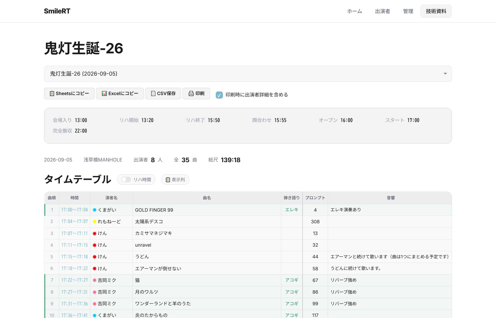
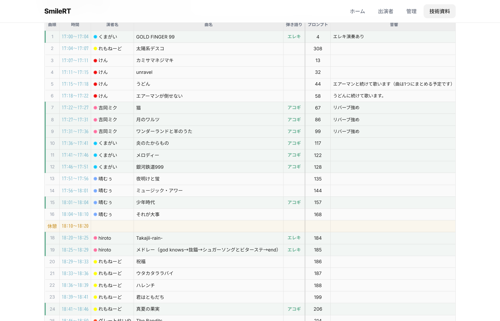
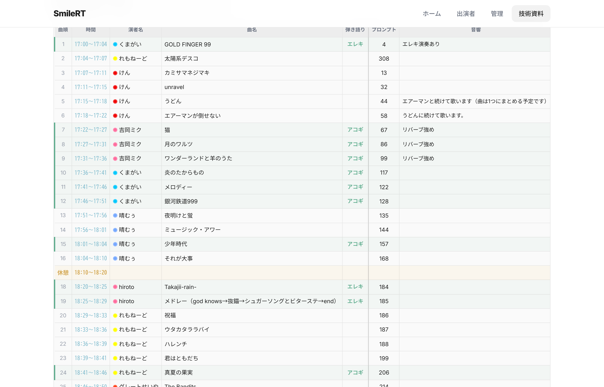
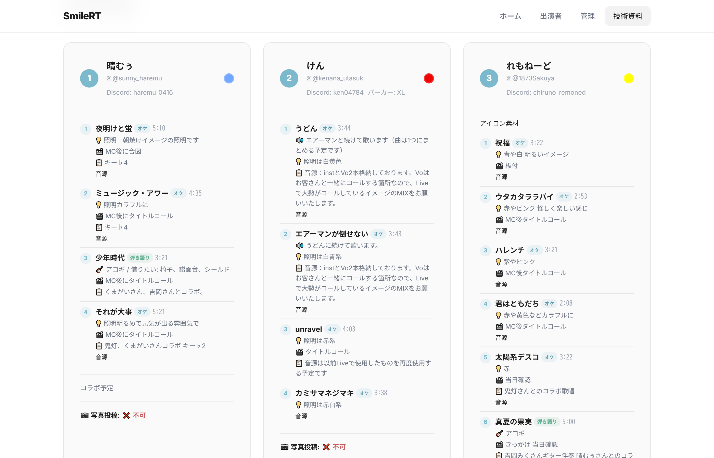

📊 技術資料ガイド
PA・照明・会場スタッフ向け — 技術資料ページの見方と活用方法
🎛️ 技術資料ページとは
技術資料ページには、イベントの タイムテーブル・スケジュール・出演者情報 がすべてまとまっています。
パスワード不要 で誰でもアクセスできるので、PA・照明・会場スタッフへのURL共有に最適です。
1 アクセス ＆ イベント選択
ナビゲーションの 「技術資料」 をタップするとページが開きます。
上部のドロップダウンから 確認したいイベント を選択してください。

URLにイベントIDを含めて共有すれば、開いた時点で自動的にそのイベントが選択されます。
2 スケジュール ＆ サマリー
イベントを選択すると、まず 当日のスケジュール と サマリー が表示されます。
📅 スケジュール欄
| 項目 | 内容 |
|---|---|
| 会場入り | スタッフの集合時間 |
| リハ開始 / 終了 | リハーサルの時間帯 |
| 顔合わせ | 出演者顔合わせの時刻 |
| オープン | 開場時刻（お客さん入場） |
| スタート | 開演時刻（ライブ開始） |
| 交流会開始 / 終了 | 交流会の時間帯 |
| 完全撤収 | 撤収完了の目標時刻 |
📋 サマリー欄
- 日付・会場 — イベントの基本情報
- 出演者数 — 登録されている出演者の人数
- 全曲数 — 全出演者の合計曲数
- 総尺 — 全曲の合計時間（休憩含まず）
3 タイムテーブルの見方
全出演者の曲が 時系列順 に並んだタイムテーブルです。
横スクロールで全列を確認できます。

📊 各列の説明
| 列名 | 内容 |
|---|---|
| 曲順 | 全体の通し番号 |
| 時間 | 各曲の開始〜終了時刻（開演時間から自動計算） |
| 演者名 | 出演者名（サイリウムカラー付き） |
| 曲名 | 楽曲名 |
| 弾き語り | 弾き語りの場合、使用楽器を表示 |
| プロンプト | 曲の出だし・きっかけの説明 |
| 音響 | 音響の演出リクエスト |
| 照明 | 照明の演出リクエスト |
| きっかけ | MCからの転換きっかけ |
| 運営への要望 | その他の要望 |
| マイク | 使用マイク本数 |
| 曲尺 | 曲の長さ（分:秒） |
| 完成音源 | 音源提出ステータス（受け取り済み / 完成済み） |
| 音源確認 | 音源チェック済みかの確認 |
| はれむぅ確認 | 最終確認ステータス |
タイムテーブル内の 黄色い行 は「休憩」や「交流会」などの特殊スロットです。
⏱️ リハ時間の表示
イベントに リハ開始時刻 が設定されている場合、タイムテーブル上部に 「リハ時間」トグルボタン が表示されます。

- トグルをONにすると、タイムテーブルに 「リハ時間」列 が追加されます
- リハ開始時刻 + 曲尺の累積から リハーサルの実時刻 が自動計算されます
- 本番とは別のタイムスケジュールでリハの進行を把握できます
📋 表示列のカスタマイズ
「📋 表示列」ボタン をクリックすると、表示したい列をチェックボックスで個別にON/OFFできるパネルが開きます。

- 必要な列だけを表示して、画面を見やすくカスタマイズ
- 設定は ブラウザに自動保存 されるため、次回以降も設定が維持されます
- PA担当は音響列を重点表示、照明担当は照明列を重点表示…といった使い分けに最適
4 出演者詳細
タイムテーブルの下には、各出演者ごとの 詳細カード が表示されます。
出演者個別の情報をまとめて確認したい場合に便利です。

- 出演者名・サイリウムカラー・パーカーサイズ
- SNSアカウント（X / Discord）
- セットリスト — 曲名・オケ/弾き語り・尺
- 演出リクエスト — 音響・照明・きっかけ・要望の詳細
- 音源URL — アップロード済みの音源リンク
- 技術リクエスト — 全体の演出要望
- 写真投稿許可 — SNS投稿の許諾状況
📤 データのエクスポート
イベントを選択すると表示される エクスポートボタン で、データを様々な形式で出力できます。
| ボタン | 用途 |
|---|---|
| 📋 Sheetsにコピー | クリップボードにTSV形式でコピー。Google Sheetsにそのまま貼り付け可能 |
| 📊 Excelにコピー | クリップボードにHTML表形式でコピー。Excelに書式付きで貼り付け可能 |
| 📄 CSV保存 | タイムテーブルをCSVファイルとしてダウンロード |
| 🖨️ 印刷 | 横向きレイアウトで印刷。PA卓や照明卓に置く紙資料として最適 |
印刷時に 「印刷時に出演者詳細を含める」 のチェックボックスで、詳細カードの印刷有無を選択できます。
🎤 当日の活用イメージ
PA（音響）スタッフ
→ 「音響」列と「マイク」列を中心にチェック。「表示列」フィルターで音響関連の列だけを表示すると見やすい。音源URLから当日使用する音源をダウンロードしておく。
→ 「音響」列と「マイク」列を中心にチェック。「表示列」フィルターで音響関連の列だけを表示すると見やすい。音源URLから当日使用する音源をダウンロードしておく。
照明スタッフ
→ 「照明」列の演出リクエストを確認。出演者ごとのサイリウムカラーも参考に。
→ 「照明」列の演出リクエストを確認。出演者ごとのサイリウムカラーも参考に。
会場スタッフ
→ スケジュール欄で会場入り・開場・開演・撤収の時間を確認。サマリーで出演者数・総尺から全体の流れを把握。
→ スケジュール欄で会場入り・開場・開演・撤収の時間を確認。サマリーで出演者数・総尺から全体の流れを把握。
主催者（MC）
→ タイムテーブルで曲順と時間配分を確認。「きっかけ」列で転換のタイミングを把握。出演者詳細カードでMC紹介用のプロフィール情報を確認。
→ タイムテーブルで曲順と時間配分を確認。「きっかけ」列で転換のタイミングを把握。出演者詳細カードでMC紹介用のプロフィール情報を確認。
？ よくある質問
Q. 技術資料にアクセスするのにパスワードは必要？
→ いいえ、パスワード不要で誰でもアクセスできます。URLを共有するだけでOKです。
→ いいえ、パスワード不要で誰でもアクセスできます。URLを共有するだけでOKです。
Q. データはリアルタイムで更新される？
→ はい。出演者がセットリストを変更すると、技術資料にも即座に反映されます。
→ はい。出演者がセットリストを変更すると、技術資料にも即座に反映されます。
Q. スマホでも見られる？
→ はい。タイムテーブルは横スクロールで全列を確認できます。「表示列」フィルターで不要な列を非表示にするとスマホでも見やすくなります。
→ はい。タイムテーブルは横スクロールで全列を確認できます。「表示列」フィルターで不要な列を非表示にするとスマホでも見やすくなります。
Q. 印刷時にテーブルが見切れる
→ 自動的に横向き・縮小印刷されます。PCのブラウザから印刷すると最も綺麗に出力されます。
→ 自動的に横向き・縮小印刷されます。PCのブラウザから印刷すると最も綺麗に出力されます。
Q. 表示列の設定はリセットできる？
→ ブラウザの設定をクリアするか、全チェックボックスをONにすれば元に戻ります。
→ ブラウザの設定をクリアするか、全チェックボックスをONにすれば元に戻ります。
SmileRT LIVE Manager — 技術資料ガイド